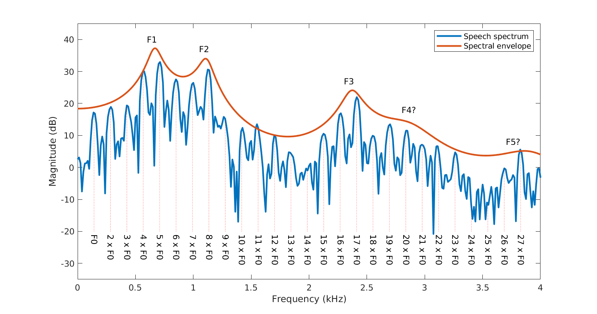

The Effect of Harmonicity
Fundamental Frequency (F0)The Fundamental Frequency of a speech signal, often denoted by F0, refer to the approximate frequency of the (quasi-)periodic structure of voiced speech signals.
it is typically not stationary, but changes constantly within a word or sentence, so it can be used for expressive purposes to signify, like emphasis, question, and lexical tone in tonal languages
Pitch
As F0 describe the actual physical phenomenon, wheareas pitch describes how ears and barins interpret the signal, in terms of periodicity.
For example, a voiced signal could have an F0 of 100hz, if a high-pass filter apply to remove all singal componnet below 450hz (which would remove the acuual F0). The lowest remaining periodic compeonet would be 500hz (equal to fifth harmonic of original F0)
but a human listener would then typically still preceive a pitch of 100hz even it doesn't exist. There might be a reconstruction from upper avaliable harmonics. This well-known phenomenon is however still not completely understood.
#插入一个图片吧
Harmonic and Harmonicity
A typical attribute of vocal sound is harmonic stucture, depends on the wave form produced by the vibrating vocal cords. Like the musical instrument, the human voice is not a pure tone, rather, it is composed of a fundamental tone(frequency) and a series of higher frequencies called upper harmonics. Usually corresponding to a simple mathematical ratio of harmonics. and the peak in harmonics often reflect the Formants of a vowel. Harmonicity play a important role in speech perception, as long as the harmonics are precise multiples of the F0, the voice will sound clear and pleasant. If the voice contains parital of (non-)un-harmonicity, like the old desrepair piano, it might increase degree of roughness, harshness,or hoarseness. it also plays a curical role in term of pitch perception. There are several possible central mechanisim that can be used to extract cues to decode the pitch of harmonic sound. The simplest mechanism is the use the lowest-frequency component to extract pitch (F0). Althernatively, the audition system might store many spectral harmonic templates, a match between one of these templates and resolved harmonics determins the pitch. a third potenital mechanism is to extract pitch from the interactions among unsolved harmonics within an auditory filter, which generate a temporal envelope with a periodicity quetion to the pitch.
game of the year
Below are a few demo audios.

|
|||